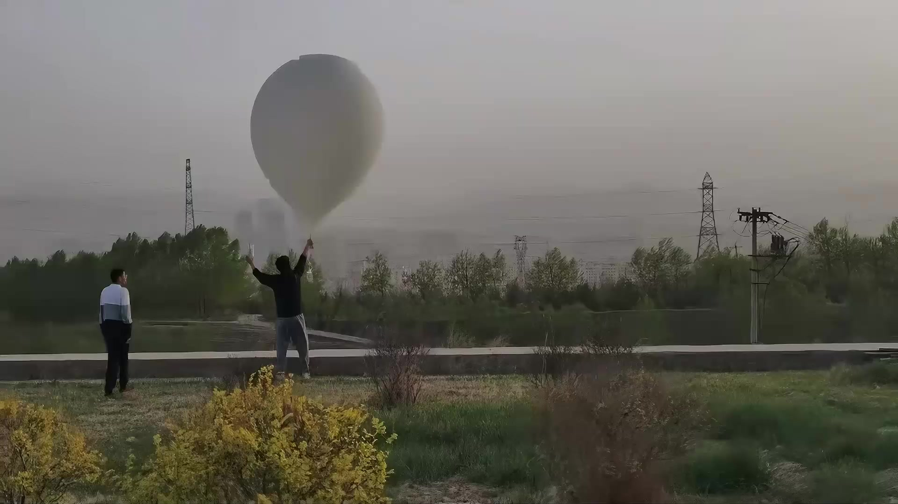
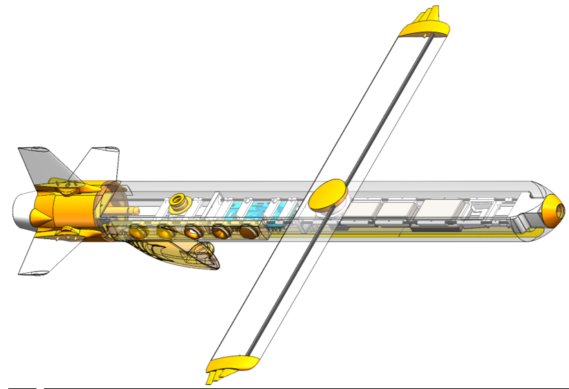
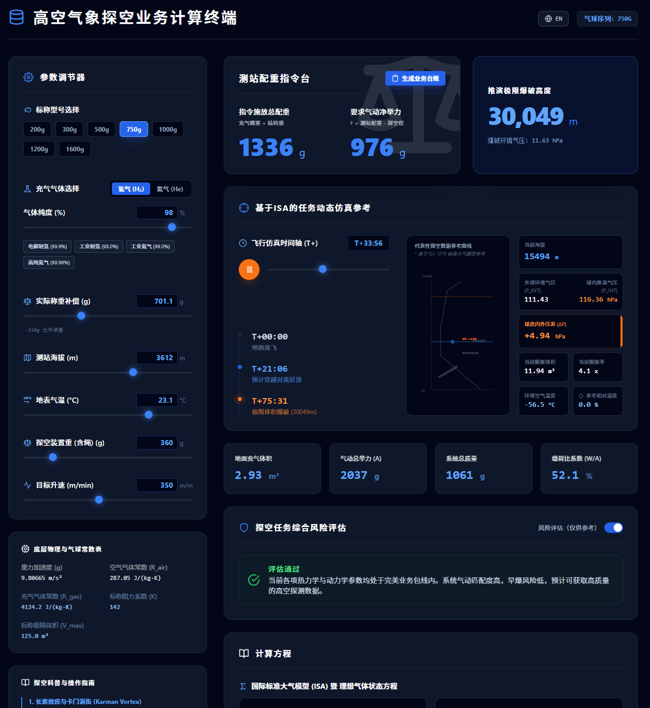
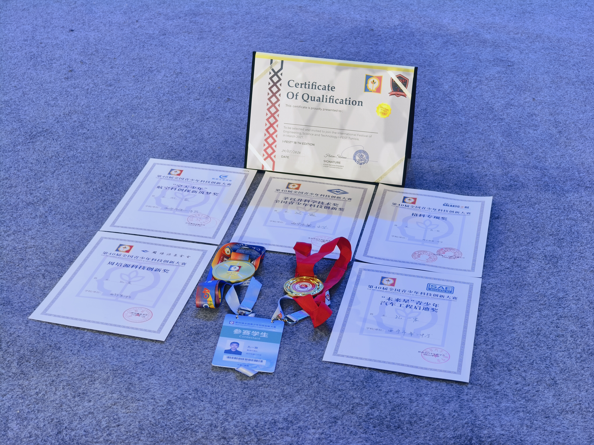

高中生 · 青海High school student · Qinghai
孔一宸Yichen Kong
空天科技 · 飞行器设计 · 自动化算法开发 · 气象探测 · 无线电通信Aerospace · Aircraft design · Automation algorithms · Atmospheric sounding · RF communications
个人主页，记录研究、工程实践、试验地点、成果与联系方式。A personal index of research, engineering work, field tests, results and contact.
PROFILE / 01
个人简介Profile
本人长期参与科研学习与工程实践，参加科创活动和竞赛。目前的工作集中在飞行器设计、自动化算法、气象探测和无线电通信，强调从建模、制造、控制到现场验证的完整过程。
详细履历、证书、研究报告和中英文简历见资料页面。
I work across scientific study and engineering practice, with current projects in aircraft design, automation algorithms, atmospheric sounding and radio communications. The work follows the complete path from modeling and manufacturing to control and field validation.
Detailed experience, certificates, reports and bilingual CVs are available in Documents.


PROJECT 01 / AEROSPACE & ATMOSPHERE
自主控制可回收探空系统AUTONOMOUS CONTROL
RECOVERABLE SOUNDING
标准高空气球搭载升空，飞行器在高空分离，通过变斜翼无动力滑翔实现远程回收。项目包含飞行器、飞控、无线通信、地面站和业务终端。A balloon-launched system that separates at high altitude and returns through an unpowered morphing-wing glide. The project includes the aircraft, flight control, radio link, ground station and operational terminal.

PROJECT 02 / ATMOSPHERIC COMPUTATION
高空探空业务
模拟计算网页HIGH-ALTITUDE
SOUNDING CALCULATOR
把 ISA 模型、达因公式、气体比举力、实时输入和 SVG 可视化组合成一个浏览器工具，用于探空方案估算。A browser tool combining ISA models, the Dines formula, gas buoyancy, live inputs and SVG visualization for sounding planning.

RECOGNITION / 2025
成果与荣誉ACHIEVEMENTS & HONORS
第40届全国青少年科技创新大赛中国科协主席奖及多项专项奖；国家发明专利（唯一发明人）；连续两年入围全国赛事并获得青海省一等奖。CAST President’s Award and multiple special awards at the 40th National Youth Science and Technology Innovation Competition; a national invention patent as sole inventor; two-time national finalist and two-time Qinghai first-prize recipient.
查看成果View recognition
联系Contact
研究、工程实践和试验交流。Research, engineering and field-test enquiries.
DISCUSSION / 07
留言与讨论DISCUSSION
GitHub Pages 是静态托管，不能在前端安全保存公开匿名留言。这里的表单会打开邮件客户端：可以匿名填写，也可以留下姓名；内容发送给站长，不会把邮箱或身份暴露在页面上。GitHub Pages is static hosting and cannot safely persist public anonymous posts in the browser. This form opens an email draft: visitors may leave a name or stay anonymous, and the message is sent to the site owner without exposing an email address on the page.
如需公开讨论区，我建议下一步绑定 Giscus（需要 GitHub Discussions）或 Supabase；这一步需要单独配置服务端/第三方账户，不能把密钥写进静态网页。For a public discussion board, the next step is to connect Giscus or Supabase. That requires a separate service configuration; secrets must not be placed in static client code.